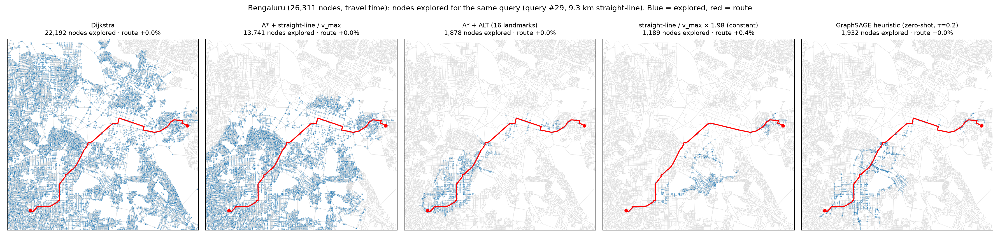
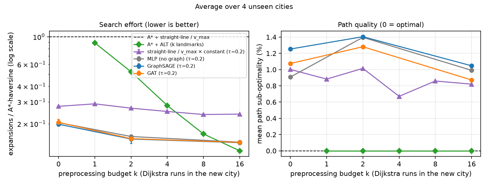
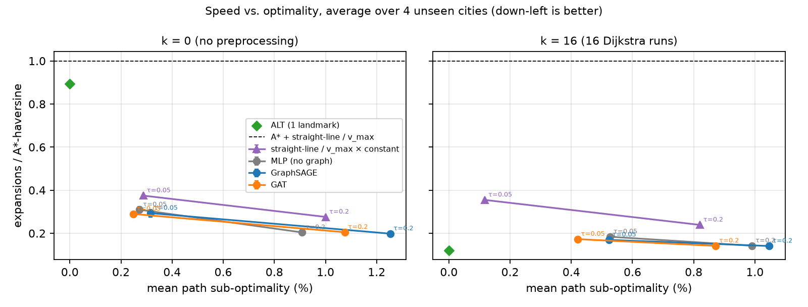

Abstract
Learned heuristics promise faster A* search, but they are usually compared only with the straight-line bound, not with strong classical methods given equal preprocessing. We train MLP, GraphSAGE and GAT models that predict the ratio between the true cost and the admissible straight-line bound on three Indian cities, and test them on four unseen cities (5k–26k nodes, OpenStreetMap). Every method gets the same budget of k = 0–16 Dijkstra runs in the new city, and we run two studies: distance on undirected graphs, and free-flow travel time on directed graphs with one-way streets (3,600 queries in all). With travel time, a zero-shot learned heuristic expands 0.20× the nodes of standard A* at about 1% longer routes. It beats a calibrated constant on both effort and route quality in 3 of 4 unseen cities, and expands 16–22% fewer nodes at equal route quality. With distance, the constant matches every model, because detour ratios are nearly identical across cities. The classical ALT algorithm, which is always optimal, overtakes learned heuristics from about 8 landmarks on these city cores. On city-scale graphs (53k and 134k nodes) the order flips: fine-tuned learned heuristics expand 13–33% fewer nodes than ALT with 16 landmarks, while zero-shot transfer breaks when the new city's top speed doubles. GNN message passing never improved on an MLP over local road features.

Figure 1. One typical query in Bengaluru (travel time; chosen by a fixed rule): nodes explored (blue) before each method finds its route (red).
1. Setup
Graphs. Drivable OpenStreetMap networks within 5 km of each city centre. Study 1 uses undirected graphs with length as the cost. Study 2 uses directed graphs, reduced to their largest strongly connected component, with free-flow travel time from OSM maxspeed tags, or road-class defaults where tags are missing. Training: Chandigarh, Ludhiana, Jalandhar. Validation (τ only): Patiala. Test: Chandigarh (seen city, new queries) and unseen Amritsar (Punjab), Dharwad, Mysuru and Bengaluru (Karnataka).
Learned heuristic. h(v) = b(v,t) · r̂(v,t), where b is the admissible straight-line bound (haversine, or haversine / vmax for travel time) and r̂ the predicted detour ratio. A 3-layer encoder (MLP, GraphSAGE or GATv2; 55–68k parameters) embeds nodes from city-invariant features (position, degree, edge lengths and, for travel time, incident speeds and one-way imbalance). A pair head predicts log r̂ using both embeddings, the straight-line geometry and the city's top speed. Labels are exact single-source Dijkstras. The loss is the pinball loss at quantile τ ∈ {0.05, 0.2}, where a lower τ means fewer over-estimates. τ = 0.2 was chosen on Patiala for every method. 3 seeds per configuration.
Equal budget k (Dijkstra runs in the test city). ALT uses k farthest-point landmarks (exact). The constant uses the τ-quantile ratio from k runs (training cities at k = 0). Learned models run zero-shot at k = 0 and are fine-tuned on the same k runs otherwise. Each city has 150 queries (straight-line ≥ 1 km), identical for all methods, and one shared A* implementation is used.
2. Results
Unseen-city average
Study 1: distance
Study 2: travel time
Dijkstra
5.53× (exact)
2.23× (exact)
A* + straight-line bound
1.00× (exact)
1.00× (exact)
bound × constant, k = 0
0.48× (+0.37%)
0.28× (+1.00%)
MLP, k = 0 (zero-shot)
0.46× (+0.56%)
0.20× (+0.91%)
GraphSAGE, k = 0
0.45× (+0.62%)
0.20× (+1.25%)
GraphSAGE, k = 2 (fine-tuned)
0.49× (+0.72%)
0.15× (+1.40%)
ALT, k = 2 / 8 / 16
1.08× / 0.35× / 0.25×
0.52× / 0.17× / 0.12×
Table 1. Node expansions relative to A* with the straight-line bound (geometric mean; averaged over Amritsar, Dharwad, Mysuru and Bengaluru), with mean extra route cost in brackets. Learned: mean of 3 seeds (std ≤ 0.02).

Figure 2. Study 2 (travel time): search effort (left, log scale) and route quality (right) as the preprocessing budget grows.

Figure 3. Study 2 speed–quality trade-off over both τ values. The learned models lie below the constant baseline, so they need less search at equal route quality.
3. Findings
Travel time: learning beats the constant. At k = 0 the MLP beats the constant on both effort and route quality in Amritsar (0.12× +0.89% vs. 0.19× +1.46%), Dharwad (0.19× +1.18% vs. 0.28× +1.65%) and Mysuru (0.38× +0.05% vs. 0.47× +0.00%). Bengaluru is a trade-off (0.12× +1.51% vs. 0.16× +0.89%). At matched quality (τ = 0.05), learned models reach 0.29–0.31× at +0.25–0.32%, against 0.37× at +0.29% for the constant: 16–22% fewer expansions.
Distance: a constant is enough. The calibrated detour factor is 1.14–1.18 in every city for distance, but 1.79–2.96 for travel time. Travel-time detours depend on where you are (arterial vs. residential), and that is learnable; distance detours barely vary.
Fine-tuning helps for travel time. Two Dijkstra runs take learned models from 0.20× to 0.15×, while the calibrated constant stays at 0.24–0.27×.
ALT wins once preprocessing is affordable. With 2 landmarks ALT needs 3.5× more expansions than a fine-tuned model (0.52× vs. 0.15×). At 8 they are close (0.17×), and at 16 ALT wins (0.12×) with optimal routes and ≤ 0.12 s of preprocessing.
At city scale, fine-tuned models beat ALT-16, and zero-shot can break. On Ludhiana 10 km (53,214 nodes) and Bengaluru 12 km (134,415 nodes; 60 queries each, no retraining), models fine-tuned on 16 runs reach 0.106–0.116× and 0.057–0.064×, against 0.134× and 0.085× for ALT-16 (13–33% fewer expansions at +0.9–1.7%). Zero-shot works on Ludhiana (MLP 0.12× at +1.4% vs. constant 0.17× at +1.2%) but not on Bengaluru 12 km: it contains a 120 km/h road while all training cities top out at 60 km/h, so the bound is twice as loose (calibrated factor 3.4 vs. 1.98) and both the k = 0 constant and the zero-shot models stay at 0.40–0.55×. One Dijkstra run re-calibrates the constant to 0.08×.
No gain from message passing. GraphSAGE and GAT stayed within ±0.01 of the MLP in both studies (inside seed noise). Local road-class features carried the signal.
4. Limitations
The main results use city cores (5k–26k nodes); the city-scale test has only two graphs with 60 queries each, and the Ludhiana 10 km graph contains the training core. All training cities share one top speed, so the top-speed feature was never learned.
Free-flow speeds are mostly road-class defaults; there is no traffic and there are no turn costs.
The model's per-target forward pass (about 9 ms in pure Python) shrinks the wall-clock gains, so expansions are the hardware-independent measure. Two τ values and one model size were tried.
References
A. V. Goldberg, C. Harrelson. Computing the Shortest Path: A* Search Meets Graph Theory. SODA 2005.
W. Hamilton, R. Ying, J. Leskovec. Inductive Representation Learning on Large Graphs. NeurIPS 2017.
S. Brody, U. Alon, E. Yahav. How Attentive are Graph Attention Networks? ICLR 2022.
G. Boeing. OSMnx: New Methods for Acquiring, Constructing, Analyzing, and Visualizing Complex Street Networks. 2017.
P. Hart, N. Nilsson, B. Raphael. A Formal Basis for the Heuristic Determination of Minimum Cost Paths. 1968.